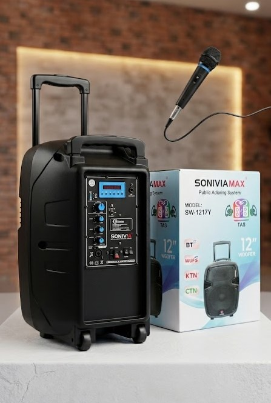

Date: March 10, 2026

Great service begins with being heard.
We’ve just upgraded our voice in the community with a brand-new Professional Public Address (PAS) Sound System — because every message we deliver deserves to be heard clearly, confidently, and without stress.
No more shouting over noise. No more lost words in the wind. With wireless mics, crisp speakers, and studio-grade audio control, our team can now engage crowds, lead workshops, and amplify SERVICOM’s mission with unmatched clarity and professionalism.
This isn’t just equipment — it’s empowerment. It’s how we ensure that every citizen, corps member, and student gets the full message, loud and clear.
“When your voice carries, your impact multiplies.”